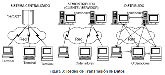

Bienvenido al mundo de las Redes y Sistemas Distribuidos
Explora los conceptos fundamentales de la Interacción Humano Computadora
Selecciona una sección del menú superior para comenzar tu viaje de aprendizaje. Cada tema ha sido cuidadosamente estructurado para ofrecerte una comprensión profunda y práctica.
Aprende
Conceptos fundamentales explicados de manera clara y accesible
Descubre
Innovaciones y tendencias en el campo de la tecnología
Explora
Casos de estudio y aplicaciones prácticas del conocimiento